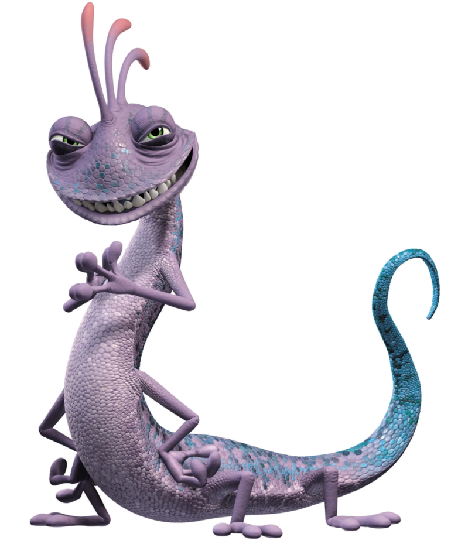

SULLIVAN
James P. Sullivan, conhecido como "Sulley" é um dos dois protagonistas dos dois filmes Monstros S.A. de 2001 e Universidade Monstros de 2013. Ele é um monstro azul e musculoso e o melhor empregado da Monstros S.A., onde trabalha com o seu assistente e melhor amigo Mike Wazowski. Sulley tem um talento especial para assustar, sempre em concorrência com seu rival de trabalho Randall Boggs.

MIKE WAZOWSKI
Ele é o melhor amigo de Sulley e os dois aparecem como os personagens principais em Monstros, S.A. e Universidade Monstros. Em Universidade Monstros, Mike conhece primeiramente Randall, que era seu colega de quarto. Eles se davam bem, mais depois que Mike conhece Sulley, que inicialmente é seu rival e inimigo. O futuro dos dois dependeria da vitória deles nos Jogos de Susto, Mike se junta com Sulley e com a Oswma Kappa, esse foi o ponta pé inicial para a amizade que vemos no segundo filme.


BOO
Boo é uma personagem principal, assim como Mike e Sullivan. Ela foi a primeira criança que conseguiu entrar no Mundo dos Monstros. Com a ajuda de Mike e Sulley, Boo precisa voltar para a sua porta. Boo aparece no início do filme Monstros, S.A. e conhece Sulley, que de Início se assusta com ela, mas depois ele se apega à ela, ao contrário de Mike, que desde que a conheceu, teve medo dela e sempre quis se livrar dela. Ao decorrer do filme, Mike e Sulley tentam enviar Boo de volta para sua casa, entretanto, encontram muitas dificuldades no caminho.


TERRI E TERRY
Terry e Terri Perry são monstros de duas cabeças com dois olhos (mas apenas um em cada cabeça), além de membros da fraternidade Oozma Kappa. Esses irmãos briguentos têm pouco em comum: Terry com "y" é um verdadeiro romântico que é rápido em perceber o lado bom de qualquer situação, enquanto o irmão mais velho Terri com "i" ostenta uma visão mais cínica da vida.



RANDALL
Randall Boggs é o antagonista de Monstros S.A e secundário em Universidade Monstros. Para Randall, ficar invisível é vergonhoso. Além disso, tem uma aparência de lagartixa roxa e sua cauda é azul. Tem quatro pernas e quatro braços. E tem um topete rosa. No filme Universidade Monstros, ele era colega de quarto de Mike nos tempos de universidade.